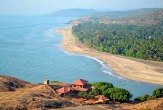

Alibaug
One of the best tourist places in Maharashtra has got to be Alibaug. The beach town literally gives travellers the best of
the Arabian sea and the nature trails. Not to mention how it caters to a wide range of audience. The sunkissed beaches with
Konkani cuisine easily make it a must-visit place.
Things to do - Some of the fun activities include camping by the Alibaug beach, sailing, trekking up to Sagargad, cycling by
the beach, parasailing, jet ski and more. The place offers a lot of watersports so all the water babies can make the most of
this trip.
Mahabaleshwar
Famous for being one of the finest spots for honeymooners in Maharashtra, Mahabaleshwar offers green plateaus of awesomeness with
rugged mountains and forts in the background.It is all a sight too beautiful and is especially on-demand in winter months.
Things to do - Take a trip to the strawberry gardens and marvel at the sight of some of the lovely green hills. You can also
visit Lodwick point, Arthur's Seat, Sunset point and visit some waterfalls closeby.
Ganpatipule
Visit the spiritual Lord Ganesha's temple and surrender your worries to the tranquil air of Ganpatipule. The holy destination
with its peaceful atmosphere will rejuvenate you.
Things to do -Take a stroll down the coastline of Ganpatipule and check out the mangrove trees. The place also offers some water sports
such as boating and more.